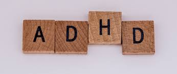

ADHD
Er is geen een test dat je kan vertellen of jij of je kind wel of geen ADHD heeft.
Om een diagnose te maken zal een docter of psychioloog je symptomen van ADHD over de laatse 6 maanden vaststellen.
De docter zal waarschijnlijk informatie vragen aan docenten en familieleden en zal checklist en beoordelingsschalen gebruiken. De docter doet ook een fysiek examen doen.
als je verwacht dat jij of je kind ADHD heeft, vraag dan aan je docter of je een evaluatie kan hebben. Voor je kind kan je ook naar de schoolbegeleider gaan om daar te vragen of je kind last heeft met leren.
ADD

Er is op dit moment geen eenduidige test voor ADD. De diagnose wordt vastgesteldt door een aantal gesprekken met een psychiater of psycholoog met de juiste bevoegdheden. Soms kan er gebruik worden gemaakt van vragenlijsten en worden er gesprekken gehousen met familieleden of andere die direct betrokken worden zoals docenten.
ADD bij volwassen wordt vaak gepaard met een andere stoornis of psychische problemen. Ongeveer 70% van volwassenen met ADD hebben ook vaak last van depressiteit, angst- en dwangstoornissen.
Bij kinderen zal de psycholoog eerst nagaan of er het gedrag misschien uit iets anders voorkomt. De psycholoog zal daarom veel vragen stellen over de algemene gezondheid van het kind, ook zal de psycholoog vragen over de thuissituatie en familiegeschiedenis.